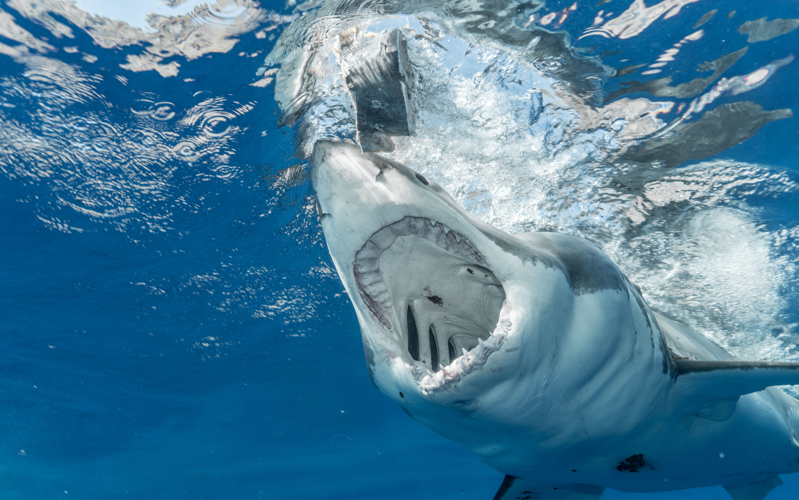
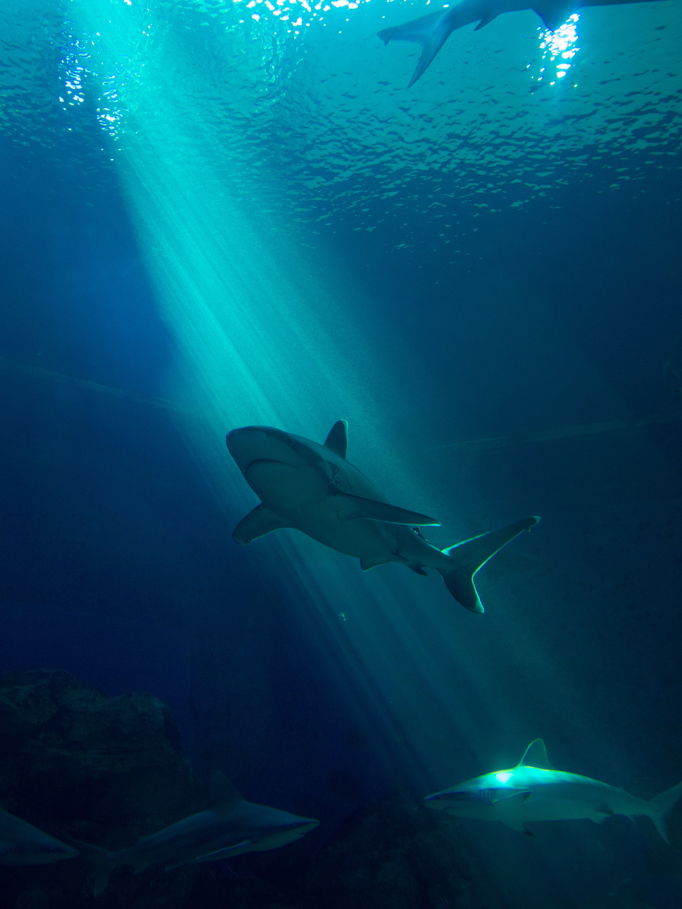

Now that you have hopefully learned a bit more about what sharks are and why they are so important, I would like to get to the big issue.
You may or may not be surprised to find out that many shark species are either endagered, or at risk of becoming endagered. Sharks themselves are used for food all over the world, though the practice of which has become more discouraged in recent times due to their endagerment. In many cultures, especially in parts of Asia, sharks are specifically hunted for their fins, shark and even whale fins are quite coveted all over Asia, this has led to a practice commonly referred to as "shark finning".
There are lots of fishermen that specifically fish for shark fins, not even the sharks themselves. Shark finning is the act of catching sharks, cutting off all of their fins, and throwing the live shark back into the ocean, where it will sink to the ocean floor and drown. These types of fishermen do this all day, day after day, killing countless sharks just for their fins.